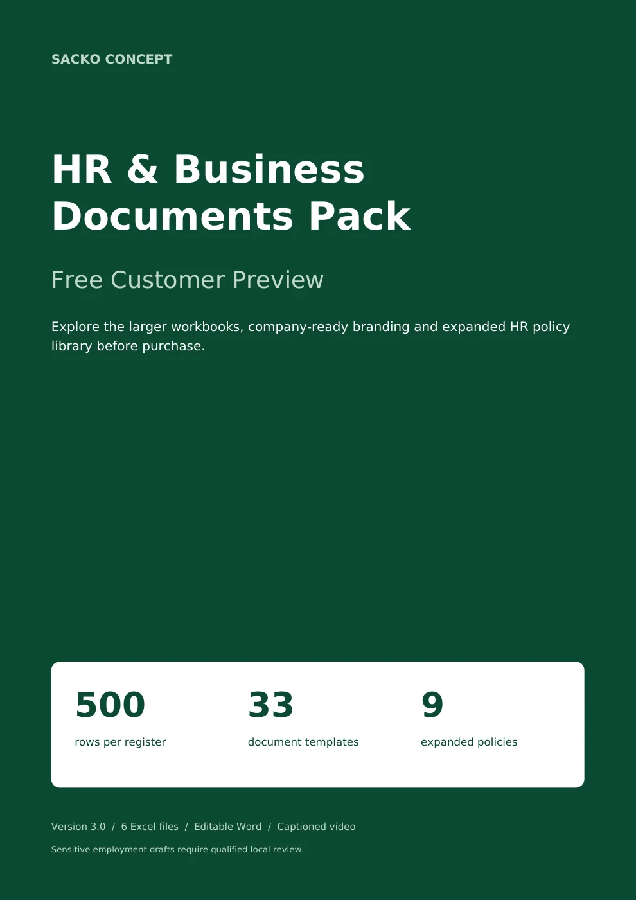

Suivi documentaire RH
Centralisez les salariés, documents, dates de révision, échéances, politiques et tâches administratives dans HR Document Control Center.
Documents RH · Édition anglaise
Fichiers en anglais · Version 3.0Réunissez le suivi documentaire, le recrutement, l’intégration et les évaluations dans une bibliothèque de travail personnalisable. Le pack « HR & Business Documents Pack » est livré en anglais.
La commande sur 1TPE sera ouverte prochainement.

Ce que vous pouvez en faire
Personnalisez les champs, renseignez vos données et utilisez les exemples fictifs pour comprendre les documents avant leur mise en service.
Centralisez les salariés, documents, dates de révision, échéances, politiques et tâches administratives dans HR Document Control Center.
Organisez les postes, candidats, évaluations et tâches d’accueil avec Recruitment and Onboarding, ses indicateurs et son suivi des personnes.
Préparez les revues, objectifs, formations et actions de suivi avec Performance and People Operations et les modèles Word associés.
Le contenu exact
La version 3.0 contient les trois systèmes de suivi, la bibliothèque de documents et les ressources d’utilisation ci-dessous. Tous les fichiers sont en anglais.
HR Document Control, Recruitment & Onboarding et Employee Performance. Chaque registre de saisie prévoit 500 lignes, avec formules, contrôles et sources de graphiques dans cette capacité.
Recrutement, intégration, administration, évaluation et politiques internes. Neuf politiques/procédures sont développées sur quatre pages ; 24 modèles courts comprennent des consignes ciblées et un exemple fictif rempli.
Company_Profile est le 34e fichier Word du pack. Il accompagne la personnalisation manuelle : nom d’entreprise, logo, contacts, responsables et adaptations à documenter.
Guide utilisateur, catalogue documentaire, aperçu, guide de personnalisation, licence pour une organisation et FAQ de dépannage.
Une présentation de vues réellement rendues des fichiers, avec transcription et sous-titres SRT. Ce n’est pas un enregistrement de manipulation dans Microsoft Excel.
Produit numérique uniquement. Aucun article physique ne sera expédié.


Avant de choisir
Examinez les tableaux de bord, la personnalisation et des exemples de documents Word. L’aperçu est issu des fichiers de la version 3.0.
PDF · Aperçu réel de 15 pages · Sans inscription
Démarrer simplement
Petites entreprises, assistants et responsables RH qui travaillent en anglais. Les consultants peuvent accompagner une organisation couverte par sa licence ; chaque autre entité nécessite une licence distincte.
Vérifiez le contenu, la langue, les formats et les prérequis avant de commander.
Téléchargez le ZIP remis après votre achat, décompressez-le et conservez votre copie.
Lisez les instructions et travaillez d’abord sur les exemples fournis ou sur une copie de vos documents.
Les informations essentielles
Microsoft Excel et Word de bureau sont recommandés pour les fichiers XLSX et DOCX, ainsi qu’un lecteur PDF et un lecteur MP4. Les logiciels Office ne sont pas inclus.
Les tests d’ouverture, d’interaction et d’impression dans Microsoft Excel de bureau n’ont pas été exécutés dans la préparation du pack. La compatibilité avec votre édition doit être vérifiée ; aucune compatibilité universelle avec toutes les versions ou tous les tableurs n’est annoncée.
Une commande couvre une seule organisation ou entité juridique identifiée. Elle peut personnaliser les fichiers et utiliser les documents complétés pour ses opérations internes. L’usage de la version achetée n’a pas d’échéance fixe.
Les sources vierges ne peuvent pas être revendues, redistribuées publiquement ni remises à une organisation non couverte. Une utilisation pour plusieurs clients ou entités nécessite des licences distinctes ou une autorisation écrite.
Lors de l’ouverture de la vente sur 1TPE, le pack sera remis au format ZIP à télécharger après paiement validé. L’accès de téléchargement et ses instructions seront communiqués par 1TPE. La commande est actuellement en préparation.
Produit à télécharger ; aucun envoi postal.
Assistance technique pendant les 30 jours calendaires suivant l’achat. Première réponse de fond sous trois jours ouvrés, du lundi au vendredi en UTC, hors jour de réception ; ce délai n’est pas un délai garanti de résolution. L’aide concerne l’accès, les instructions et les défauts reproductibles des fichiers fournis. Personnalisation, saisie, intégrations et conseil juridique sont exclus.
Vos questions
Non. La page de présentation est en français, mais les fichiers Word, Excel, les guides et les sous-titres livrés dans cette version sont en anglais.
Trois systèmes distincts. Chacun est fourni en version vierge et en version de démonstration, soit six fichiers Excel au total.
Oui, manuellement. Le nom d’entreprise se renseigne dans Company Setup dans chaque classeur. Le logo s’insère avec les commandes du logiciel ; il n’existe pas de synchronisation automatique entre les fichiers.
Ils constituent une base de travail à adapter. Aucune conformité juridique universelle n’est promise. Les modèles sensibles nécessitent une revue qualifiée pour le pays et la situation concernés.
La licence couvre une organisation. L’utilisation de la collection source pour d’autres clients ou entités requiert des licences distinctes ou une autorisation écrite.
L’assistance couvre les difficultés de téléchargement, les explications sur les instructions et les défauts reproductibles des fichiers originaux. Les prestations sur mesure et les décisions RH individuelles sont exclues.
Le paiement, la facture et les demandes de remboursement sont encadrés par les conditions de vente de 1TPE, qui prévoient notamment une garantie contractuelle « satisfait ou remboursé » de 30 jours. Les droits d’utilisation du pack restent ceux précisés dans sa licence.
SACKO CONCEPT
Pack RH en anglais : 33 modèles Word, 3 systèmes Excel en versions vierge et démonstration, guides PDF et vidéo de présentation. Licence pour une organisation.
Contenu vérifié sur l’archive livrée de l’édition indiquée.
La commande de ce produit sur 1TPE est en préparation. Vous pouvez déjà consulter son contenu et son aperçu gratuit.